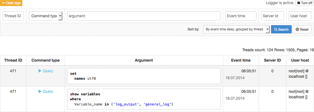

What is it?
This is a log viewer for MySQL queries. It turns on query logging in MySQL and display it in nice Web interface with formatting and syntax highlighting.
Why could it be useful?
- It can help find a bug, since very often SQL query is compiled by external library (for example ActiveRecord) and we don't know exactly, which SQL query is executed.
- It can help to optimize your application - see how many queries and which are executed.
How it works?
This is a web application written on PHP 5.5. It based on MySQL feature for logging SQL queries in mysql.general_log:
set global general_log = 'on';
set global log_output = 'table';
To read log:
select * from mysql.general_log
Authors and Contributors
You can find my contact email at my profile page: Kirill Zhirnov.
If you are looking for a professional web developer: kirill_zhirnov.elance.com